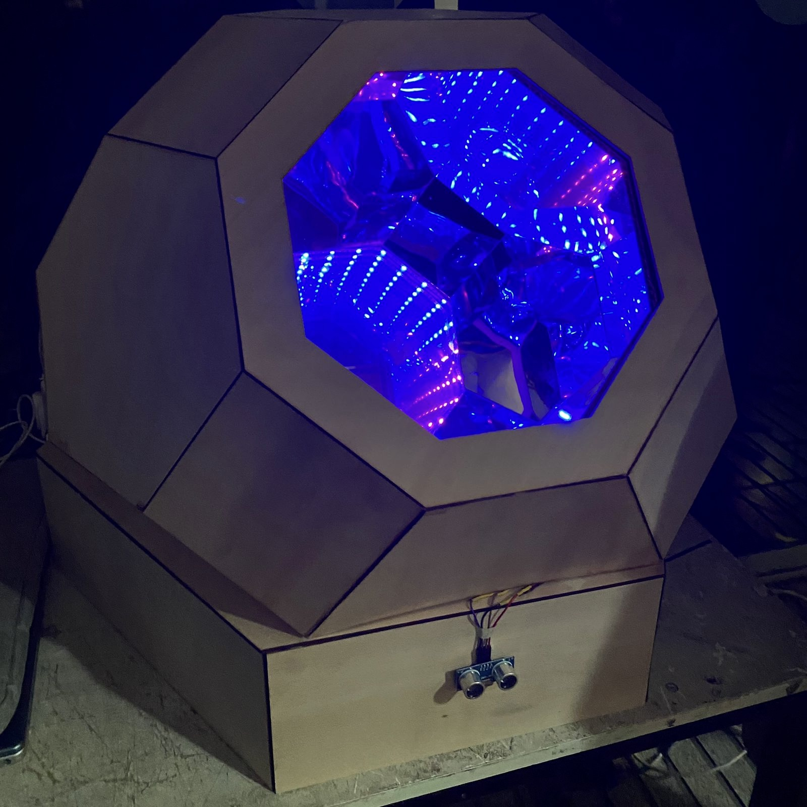
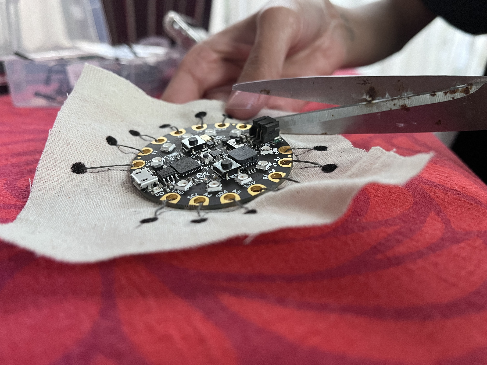
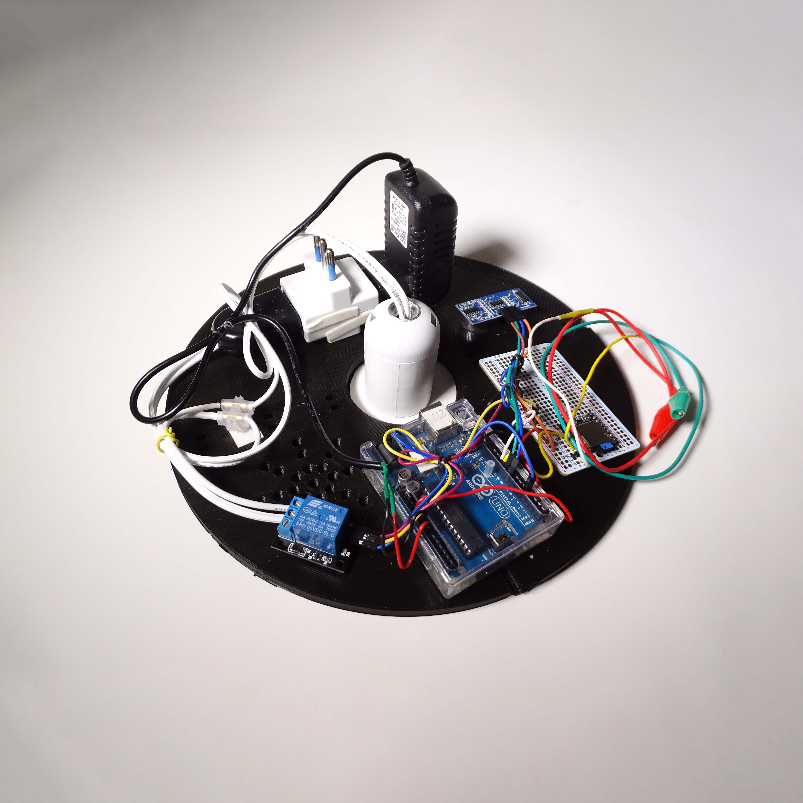

universidad diego portalesuniversidad diego portales
facultad de arquitectura, arte y diseñofaculty of architecture, arts, and design
escuela de diseñodesign school
segundo semestre 2023 (marzo - julio)segundo semestre 2023 (marzo - julio)
este taller es un curso práctico y teórico, donde abordamos investigación y metodología de trabajo con usuarios, uso creativo de herramientas de prototipado digital, lenguajes de programación web y de microcontroladores y uso de sensores y actuadores análogos y digitales.in this practical and theoretical studio class we will learn how to perform user research, and creative use of digital prototyping tools, web and microcontroller programming languages, and use of analog and digital sensors and actuators.
desarrollamos proyectos aplicados para comprender las necesidades de los usuarios, implementar dispositivos e instrumentos digitales para interacción humano-computador (HCI), y así lograr experiencias de usuario innovadoras.we will develop applied projects in order to understand users' needs, create digital devices and instruments for human-computer interaction (HCI), in order to create innovative user experiences.
los productos de este curso son conducentes tanto a generar publicaciones académicas como también la experimentación lúdica y creación de proyectos para el mundo profesional.the outcomes of this studio class will be both foundations for academic research and playful experimentation applied to professional projects.
sergio majluf: profesor principallead professor
aarón montoya-moraga: profesoreprofessor
andrés martin: ayudanteteaching assistant